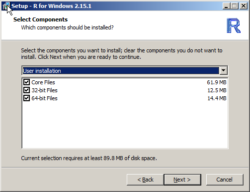
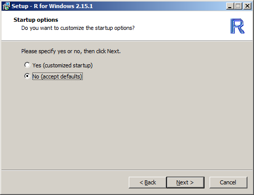

Figure 1: pbdR Relationships to Libraries
© 2013 pbdR Core Team. All rights reserved.
Permission is granted to make and distribute verbatim copies of this guide and its source provided the copyright notice and this permission notice are preserved on all copies.
This publication was typeset using LATEX.
In this guide, we will detail the necessary steps for how to set up a pbdR environment. What follows in the remaining sections is a very lengthy list of installation instructions; however, most users should find the process fairly straight-forward, and may not need (or want) all of the details we will provide unless something goes wrong. In any case, the short version for setting up a pbdR environment is to:
Items 1 and 2 are interchangeable, and so if you already have R (and additionally Rtools for Windows) and/or an MPI library installed, then merely skip this/these step(s); there is no need to reinstall anything.
This should be fairly painless. R has binary packages for every operating system you have heard of (and some you haven’t), and the install should go fine. Of course, since R is open source, you are free to compile it yourself, should have have reason or need to do so. You can find both the source as well as binaries at the R project’s main site: http://cran.r-project.org/.
Additionally, you may wish to customize your R build by compiling from source. For example, you may wish to link R with a high performance linear algebra library, such as MKL. See the R Installation and Administration Manual at http://cran.r-project.org/doc/manuals/R-admin.html for full details.
Windows users should install MPICH2, available from http://www.mpich.org/ .
All released pbdR packages are available from http://cran.r-project.org/ which is the Comprehensive R Archive Network (CRAN). This is similar to the CPAN for perl or CTAN for LATEX, although with many improvements and benefits over its competitors.
It is also possible to link pbdR with high performance linear algebra libraries, such as MKL.
Figure 1 offers some insight into the package organization. See the pbdSLAP vignette for more details.
Officially, the pbdR team does not support gaming consoles. However, it is possible to install pbdR packages on Windows.
The instructions and screenshots for this document are for version 2.15.1 of R, but later versions should be very similar, if not identical.






During the course of installation, you may run into unrecoverable issues. The pbdR team does not support MPI libraries or R core, so if you have problems during that portion of the installation phase, we probably can not directly help you. However, there are still many great resources at your disposal, maintained by those individual projects.
If you have problems installing or customizing R, see the R Installation and Administration Manual at http://cran.r-project.org/doc/manuals/R-admin.html for help.
If you are having trouble installing an MPI library, you should see that library’s official documentation. For OpenMPI, see http://www.open-mpi.org/community/help/ and for MPICH, see http://www.mpich.org/documentation/guides/ .
For the remainder, we will be addressing installation issues with pbdR packages.